Invited by NAU’s Vice Provost for Global Affairs to be the only student keynote speaker at the 2024 Internationally Connected Faculty Reception, where I shared my life story and my experience at NAU as an international student.
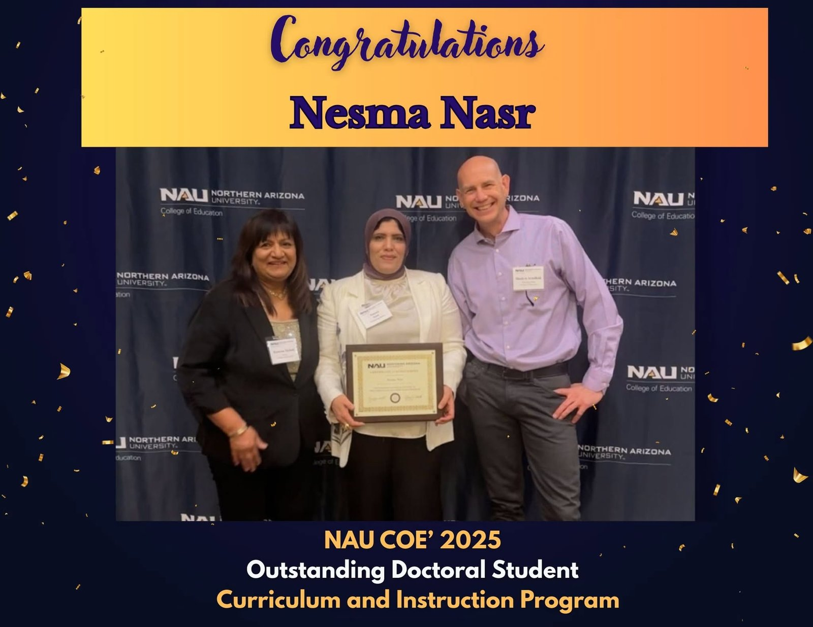
Nesma holding her Outstanding Doctoral Student certificate with two College of Education faculty membersNesma holding her Outstanding Doctoral Student certificate with two College of Education faculty members
Outstanding Doctoral Student, Curriculum and Instruction
Named the College of Education’s 2025 Outstanding Doctoral Student in the Curriculum and Instruction program at Northern Arizona University.
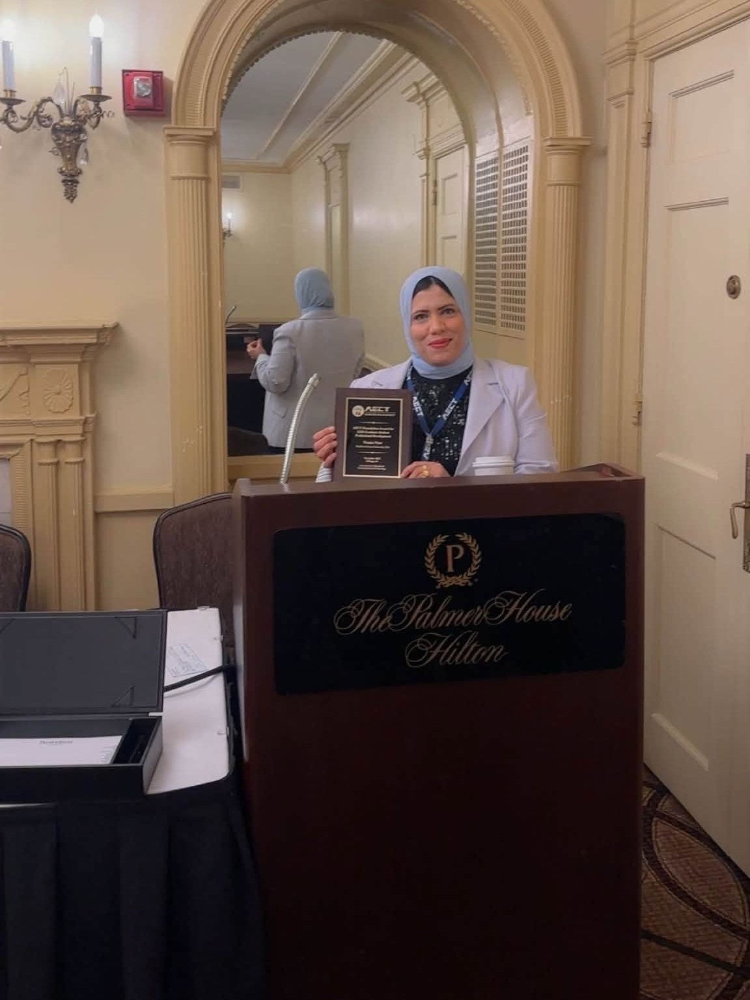
Nesma holding her AECT award plaque at the Palmer House Hilton in ChicagoNesma holding her AECT award plaque at the Palmer House Hilton in Chicago
AECT Learner Engagement Division professional development award
Received the AECT Foundation Award for Graduate Student Professional Development from AECT’s Learner Engagement Division at the 2026 International Convention in Chicago.
Nesma with the AERA Instructional Technology SIG awardNesma with the AERA Instructional Technology SIG awardNesma with the AERA Instructional Technology SIG award
AERA Instructional Technology SIG award
My paper on passive interaction versus human–AI collaboration received the SIG’s award for the best proposal with a graduate student as first author at the AERA Annual Meeting in Los Angeles.
Nesma with the dean of the College of Education at the scholarship celebrationNesma with the dean of the College of Education at the scholarship celebrationNesma with the dean of the College of Education at the scholarship celebration
Phi Kappa Phi, Phi Delta Kappa, and Jerry Petersen scholarships
Received the Phi Kappa Phi Graduate Scholarship from Chapter #078, the Phi Delta Kappa Scholarship, and the Jerry Petersen Scholarship, along with College of Education professional development awards, including the Dean’s Award for Professional Development.
AERA Annual Meetings
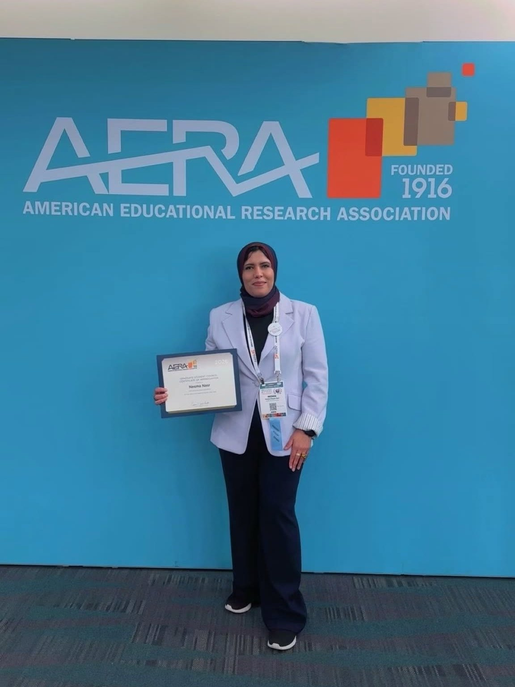
Nesma at the AERA 2026 Annual Meeting in Los Angeles, holding her Graduate Student Council certificate of appreciationNesma presenting at AERA 2026 in Los AngelesNesma presenting at AERA 2026 in Los Angeles
AERA 2026
Four papers, including the SIG award paper on human–AI collaboration, a study of structured GenAI in bilingual multicultural education, a cross-national study of AI literacy, and a systematic review of AI in EFL education in the Arab world.
Nesma with Dr. Chih-Hsiung Tu at an AERA poster session
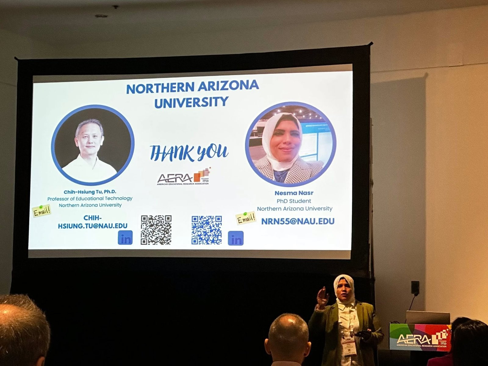
Nesma presenting with Dr. Chih-Hsiung Tu at AERA, with the closing slide on screenNesma presenting at AERA 2025 in Denver
AERA 2025
Seven papers, including a systematic review of GenAI and critical thinking, a narrative ethnography of an English learner’s inclusion, and social network analysis studies of online learning.
Members of the AERA Graduate Student Council holding certificates of appreciation at the 2026 business meeting
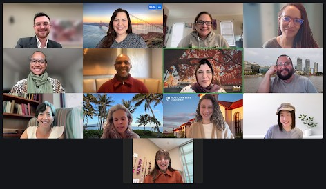
AERA Graduate Student Council meeting online with AERA leaders, 2026Nesma with the AERA Graduate Student CouncilNesma holding her AERA Graduate Student Council certificate of appreciation, 2026
AERA Graduate Student Council
Serving as Social Media and Website Editor for the AERA Graduate Student Council, and recognized with a certificate of appreciation at the council’s 2026 business meeting.
AECT International Conventions
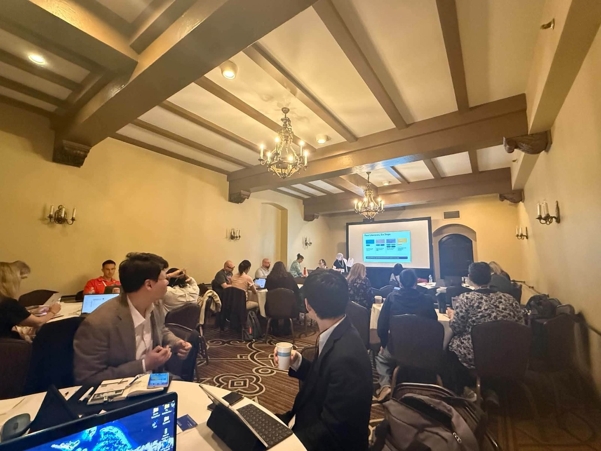
Co-facilitating From Awareness to Action at AECT 2026, with the Four Literacies, Six Steps slide on screenNesma co-facilitating a workshop at AECT 2026 in ChicagoNesma co-facilitating a workshop at AECT 2026 in ChicagoNesma holding her AECT award plaque at the Palmer House Hilton in Chicago
Nesma and a colleague with the IGNITE-STEM opening slide at Tuba City Unified School DistrictEducators at the IGNITE-STEM co-design workshop in Tuba CityEducators at the IGNITE-STEM co-design workshop in Tuba City
IGNITE-STEM co-design workshop
Led the AI for STEM Education workshop in the IGNITE-STEM co-design series with Tuba City Unified School District, funded by an NSF FINDERS Foundry planning grant. Educators and families told me the work approached AI with respect for their culture and traditions.
The IGNITE-STEM project teamThe IGNITE-STEM project team
Co-PI, IGNITE-STEM development proposal
Co-Principal Investigator on a $300,000 NSF FINDERS Foundry development proposal to provide STEM and AI learning for students, celebrate it with the community, and study how it builds support for STEM learning.
Out-of-school-time STEM educators in a professional learning session
AI-Enhanced Professional Learning for Informal STEM Education
AI technologist on an NSF STEM K–12 proposal, with a $314,424 subaward to NAU, to co-design and study AI-enhanced professional learning for out-of-school-time STEM educators.
Introduced on stage with the AZTESOL Board as Member at LargeNesma on stage with the AZTESOL Board
Member at Large, AZTESOL Board
Serving as Member at Large on the board of Arizona Teachers of English to Speakers of Other Languages (AZTESOL). I also served on the organizing team for the 2024 AZTESOL Annual State Conference at Northern Arizona University.
Nesma supporting technology at AIITECNesma supporting technology at AIITEC
American Indian/Indigenous Teacher Education Conference
Technology facilitator for AIITEC at Northern Arizona University each June since 2023.
Workshops and teaching
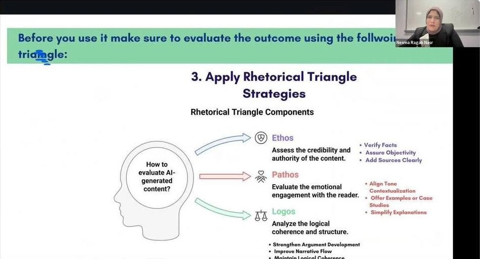
Teachers in the Loop: Empowering Teacher AI Literacy for Ethical, Responsible, and Effective AI Use, the series I designed and presented
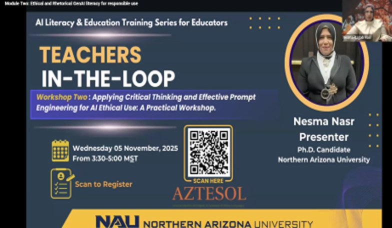
Workshop One, October 29, 2025: functional GenAI literacy, introducing the presenter and facilitator
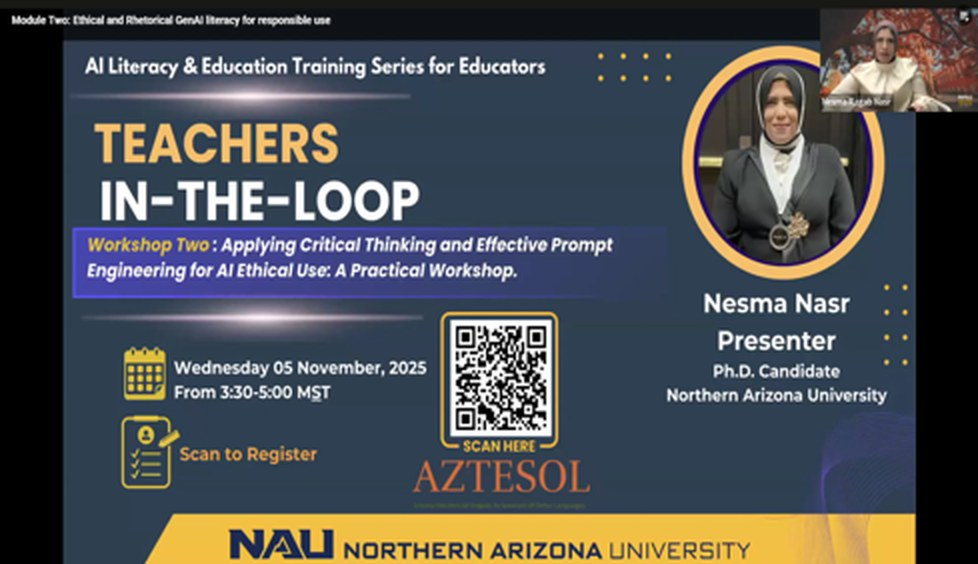
Workshop Two, November 5, 2025: Applying Critical Thinking and Effective Prompt Engineering for Ethical AI Use
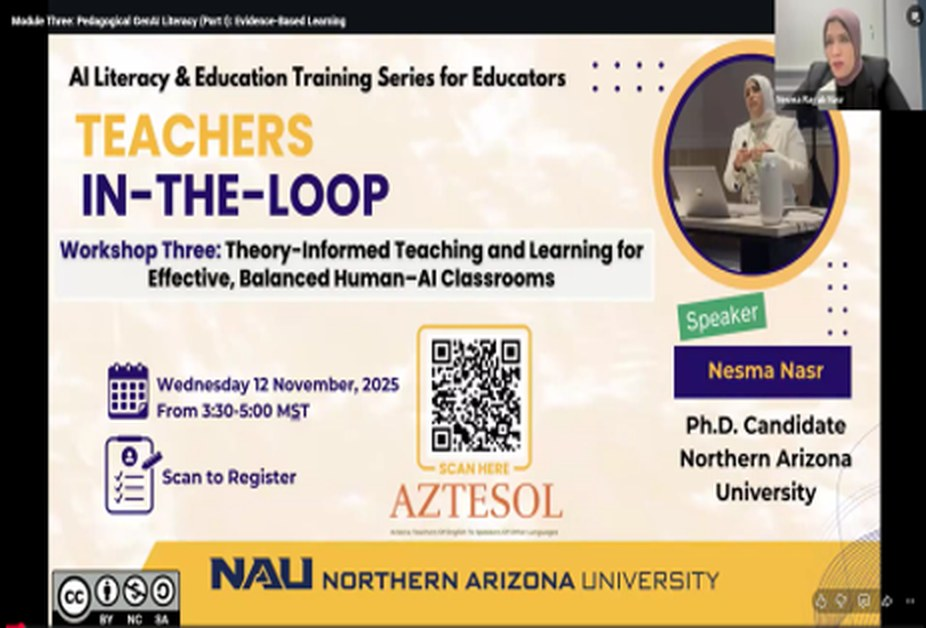
Workshop Three, November 12, 2025: Theory-Informed Teaching and Learning for Effective, Balanced Human–AI Classrooms
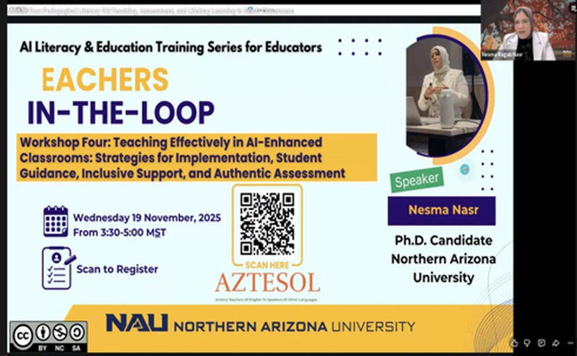
Workshop Four, November 19, 2025: Teaching Effectively in AI-Enhanced Classrooms
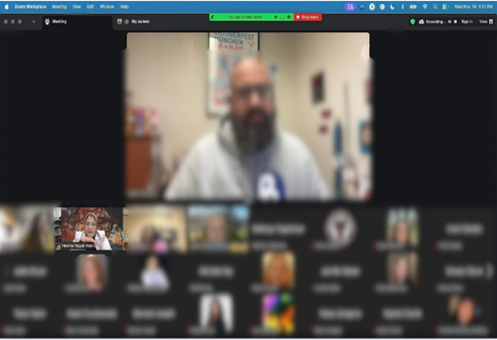
Educators joining a Teachers in the Loop session on Zoom (participants blurred)
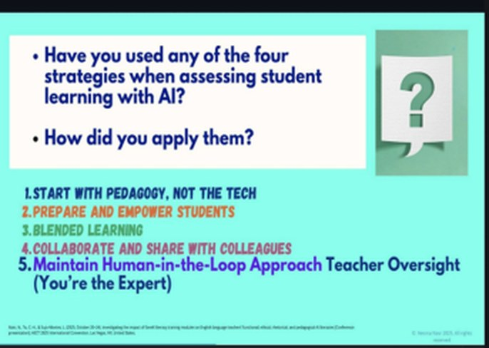
Workshop Four discussion: strategies for assessing student learning with AI
Teachers in the Loop series
A four-session GenAI literacy series with NAU’s STEM department and AZTESOL, later repackaged as ten microlearning videos. More than 250 educators have completed the training.